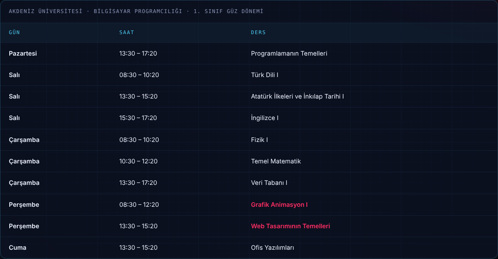

Web tasarımına yeni başladım. Bu yazıda ilk haftalarda öğrendiğim temel kavramları, kendime not alır gibi topladım. Siz de yeni başlıyorsanız işinize yarayabilir.
HTML: sayfanın iskeleti
HTML, sayfada ne olduğunu söyler: başlık, paragraf, resim, liste, tablo. En önemli fark ettiğim şey, doğru etiketi seçmenin hem erişilebilirlik hem de SEO için önemli olması.
<header>...</header>
<main>
<h1>Mehmet Annac</h1>
<p>Bilgisayar Programcılığı öğrencisi</p>
</main>
<footer>...</footer>CSS: sayfanın görünüşü
CSS, o içeriğin nasıl görüneceğini belirler. Renkleri tek bir yerde tutmak için CSS değişkenlerini kullanmak en sevdiğim özellik oldu:
:root {
--neon: #ff2e63;
--cyan: #4cc9f0;
}
h1 em { color: var(--neon); }
Mobil öncelikli (mobile-first) düşünmek
Sitelerin çoğu artık telefondan açılıyor. Bu yüzden önce küçük ekrana göre tasarlayıp, büyük ekranlar için @media sorgularıyla genişletmek daha mantıklı. Bu sitede de menü telefonda tam ekran açılıyor, kartlar tek sütuna iniyor.
Öğrenirken kendime koyduğum kurallar
- Önce yapıyı (HTML), sonra görünüşü (CSS), en son etkileşimi (JavaScript) düşün.
- Her sayfaya ayrı bir
<title>ve açıklama yaz. - Tarayıcının geliştirici araçlarını (F12) sürekli açık tut.
- Beğendiğin sitelere bak, ama kopyalama: neden güzel olduğunu anlamaya çalış.
I've just started web design. In this post I collected the basics I learned in my first weeks, like notes to myself. If you're starting out too, they might help.
HTML: the skeleton of the page
HTML says what is on the page: headings, paragraphs, images, lists, tables. The biggest thing I noticed is that choosing the right tag matters for both accessibility and SEO.
<header>...</header>
<main>
<h1>Mehmet Annac</h1>
<p>Computer Programming student</p>
</main>
<footer>...</footer>CSS: how the page looks
CSS decides how that content looks. Using CSS variables to keep colours in one place became my favourite feature:
:root {
--neon: #ff2e63;
--cyan: #4cc9f0;
}
h1 em { color: var(--neon); }Thinking mobile-first
Most sites are opened on phones now. So it makes sense to design for small screens first and expand for larger ones with @media queries. On this site the menu opens full-screen on phones and cards drop to one column.
Rules I set for myself while learning
- Think about structure (HTML) first, then looks (CSS), then interaction (JavaScript).
- Give every page its own
<title>and description. - Keep the browser's developer tools (F12) open all the time.
- Look at sites you like, but don't copy them: try to understand why they work.